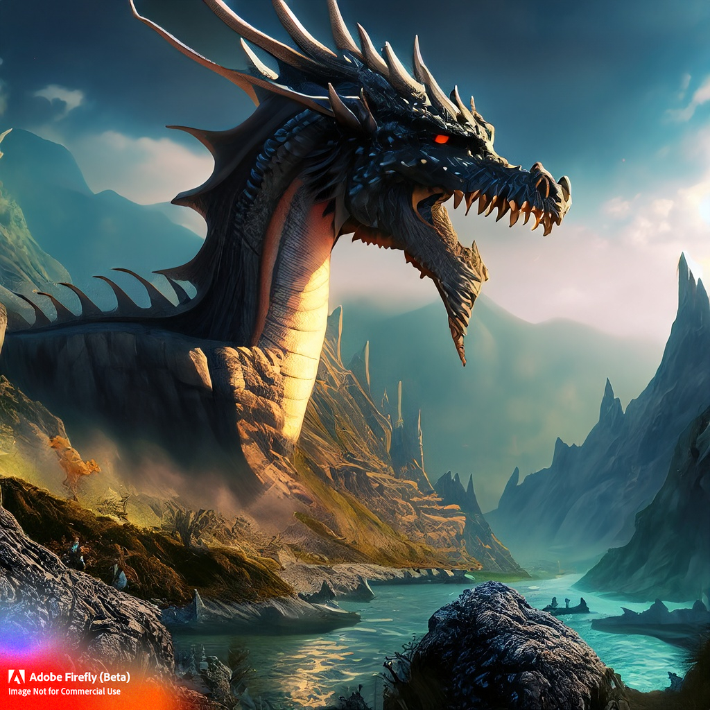
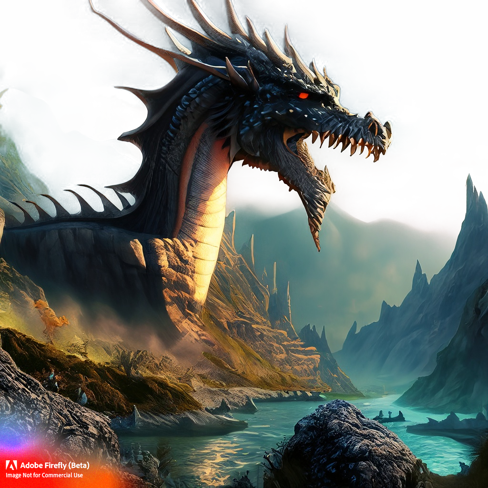

Web Image Formats
Serve the right pixels to the right device. Mobile-first, shared layout, no extra wrappers.
JPG — Joint Photographic Experts Group
.jpg (or .jpeg)

Image generated with Adobe Firefly by Josh Solomon
- Best for: photographs and complex scenes with subtle gradients.
- Why: efficient lossy compression keeps files small while maintaining visual quality.
- Notes: no transparency; prefer quality 70–85 and progressive encoding when possible.
PNG — Portable Network Graphic
PNG
Solomon Craft Logo by Josh Solomon
- Best for: UI, logos, flat art, images that require alpha transparency.
- Why: lossless compression preserves crisp edges and text.
- Notes: often larger than JPEG/WebP; consider indexed PNG or use SVG for line art.
GIF — Graphics Interchange Format
GIF

Animated GIF from Imgur.
- Best for: tiny UI animations or retro aesthetics.
- Why: universal support.
- Notes: 256-color limit, heavy files. Prefer video (
mp4/webm) or animated WebP/AVIF.
SVG via <img>
SVG via <img> Tag
Solomon Craft Wordmark by Josh Solomon
- Best for: logos, icons, diagrams.
- Why: vectors are resolution-independent and tiny.
- Notes: use inline SVG only when you need CSS/JS control of inner elements.
SVG — Embedded
SVG — Embedded
SVG Donut modified from
Kyle Edwards — CSS/SVG Animated Circles.
- Best for: styling or animating parts of the SVG with CSS/JS.
- Why: full DOM access to shapes and attributes.
- Notes: sanitize untrusted SVGs; they can contain scripts.
WebP
WebP

Image generated with Adobe Firefly by Josh Solomon
- Best for: general-purpose images (opaque or transparent) with modern support.
- Why: smaller than JPEG/PNG; supports alpha and animation.
- Notes: great default when AVIF isn’t available.
AVIF
AVIF

Image generated with Adobe Firefly by Josh Solomon
- Best for: photographic content where size matters most.
- Why: often the smallest files with high quality; HDR capable.
- Notes: slower encode times; provide WebP/JPEG fallbacks for older browsers.